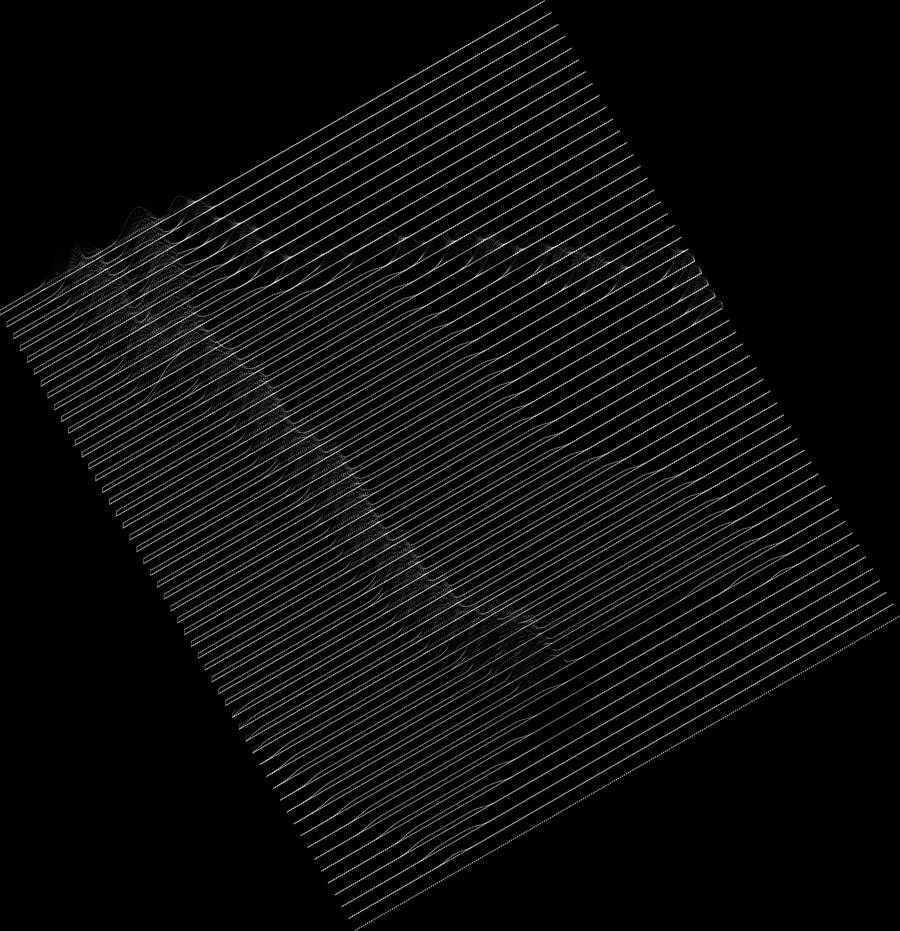

The interface between anthropogenic and evolved systems requires dissolving boundaries and erasing hierarchies within human and non-human agents.
Studio Brief — LAR 8020
Neo-Organisms · Wetware
The interface between anthropogenic and evolved systems requires dissolving boundaries and erasing hierarchies within human and non-human agents. The studio will explore these boundaries and hierarchies through the physical and cultural definitions of wilderness in the context of new technologies that enable local and remote sensing, long-term monitoring, and machine intelligence. Students will be asked to engage their research agenda through the concept of neo-organisms and wetware (protocols) to speculate on the implementation of adaptive landscapes that are curated and choreographed for a broad range of species and processes.
The format for the course is a research studio in which each student will be required to formulate their unique research agenda. Workshops, readings, and discussions will provide a broad framework to experiment with concepts in responsive technologies, robotics, machine intelligence, and animation/simulation to imagine new forms of infrastructure and wildness.
“In a highly manipulated, managed, and exploited landscape is it possible to also have wildness, the unknown, the powerful and uncontrolled while also promoting humanity?”

About the studio
LAR 8020 Neo-Organisms and Wetware is a graduate thesis design studio in the Department of Landscape Architecture at the University of Virginia. Engaging the Mississippi River Delta of southern Louisiana, the studio positions the delta as a test bed examined, poked, and prodded through remote and mediated methods of observation and modification — where new technologies such as machine learning, artificial intelligence, simulation, and robotics are imagined as instruments for the reformulation of a managed, wilder delta.
Faculty: Bradley Cantrell (Professor and Chair). Teaching Fellow: Zihao Zhang. Meeting: Monday 12:00–17:30, Thursday 09:00–13:00.
The studio culminated in a final review with seven thesis projects: Matthew Walter, Pia von Barby, Liza Court, Erica Mutschler, Cara Turett, Lindsey Luria, and Liz Camuti.